물류관리사-1교시 (2008-08-24 기출문제)
1과목: 물류관리론
1. 최근 기업 물류환경이 급속도로 변화하고 있다. 이러한 변화에 대한 설명으로 옳지 않은 것은?
- 자사 물류 정보를 물류기업의 컴퓨터에 Link시켜 실시간으로 고객의 요구에 대처할 수 있다.
- 기술적으로 앞선 Bar Code 시스템이 RFID (Radio Frequency Identification)를 대체하고 있다.
- 컴퓨터회사에서 부품관리는 물론 부품 조립까지 물류전문회사인 제3자 물류회사에 맡길 수 있다.
- GPS(Global Positioning System)를 활용해 소비자가 요청한 물품의 위치를 정확히 파악하여 신속하게 배송 처리할 수 있다.
- WMS(Warehouse Management System)를 통해 물류센터에 보관되어 있는 상품의 재고관리를 On-Line 상태에서 할 수 있다.
(정답률: 82%)

2. 기업의 물류합리화를 촉진하는 최근의 물류환경과 가장 거리가 먼 것은?
- 인건비 상승
- 시장경쟁의 심화
- 교통체증의 심화
- 제품수명주기의 연장
- 수요의 다양화와 고도화
(정답률: 80%)
3. 다음 중 판매물류에 대한 설명으로 옳은 것은?
- 포장재 및 빈 용기를 회수하여 재사용하기 위한 물류를 의미하기도 한다.
- 자재창고의 출고작업에서 생산공정으로의 운반과 하역, 그리고 제품창고의 입고까지 포함한다.
- 제품창고에서 출고하는 과정과 배송센터까지의 수송 그리고 고객에게까지 배송하는 작업 등이 포함된다.
- 제품의 생산시작부터 소비자에게 전달하는 일체의 수ㆍ배송활동과 이에 수반되는 제반물류 활동을 의미한다.
- 자재가 조달처로부터 운송되어 생산자의 보관창고에 입고되고 생산공정에 투입된 후 최종 제품이 만들어지기까지의 물류활동을 의미한다.
(정답률: 알수없음)
4. 소매점에서 유통창고로 제품을 주문하는 경우, 제품 인도기간의 분포가 다음 그림과 같이 나타난 이유로 가장 적절한 것은?
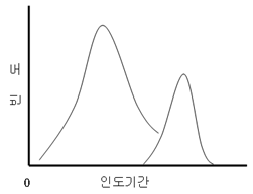
- 수송비의 과다
- 안전재고 과다
- 주기재고 과다
- 경제적주문량 과다
- 백오더(back-order)의 발생
(정답률: 알수없음)
5. 물류의 기능에 관한 설명으로 옳지 않은 것은?
- 제품을 물리적으로 보존하고 관리하는 활동이다.
- 생산된 제품을 소비자까지 전달하는 과정에 관련된 활동이다.
- 제품을 보호하고 취급을 용이하게 하며, 제품가치를 제고시키는 활동이다.
- 물류활동과 관련된 정보내용을 제공하여 종합적인 물류관리의 효율화를 기할 수 있도록 하는 활동이다.
- 재화와 용역을 그 효용가치가 높은 장소로부터 낮은 장소로 이동시켜 효용가치의 차이를 극복하는 활동이다.
(정답률: 67%)
6. 물류관리와 생산운영관리가 담당하는 영역 중 서로 중첩되는 것으로 구성된 것은?
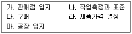
- 다, 마
- 가, 다
- 나, 라
- 라, 마
- 다, 라
(정답률: 알수없음)
7. 물류계획의 수준을 일반적으로 전략, 전술, 운영으로 분류한다. 다음 설명 중 옳은 것으로 구성된 것은?
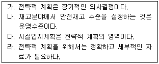
- 가, 나
- 가, 다
- 나, 다
- 나, 라
- 다, 라
(정답률: 알수없음)
8. 다음에서 설명하고 있는 물류형태는 무엇인가?
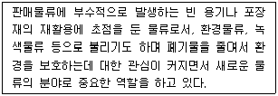
- 조달물류
- 회수물류
- 유통물류
- 생산물류
- 사내물류
(정답률: 70%)
9. 공급체인관리가 요구하는 인식전환의 방향이 아닌 것은?
- 제품중심에서 고객중심으로
- 재고관리자에서 정보관리자로
- 단순거래관계에서 협력관계로
- 프로세스중심에서 기능중심으로
- 비용절감에서 수익성 확보로
(정답률: 28%)
10. 다음 중 SCE(Supply Chain Execution)의 주요 의사결정 사항에 해당되지 않는 것은?
- 재고수준
- 자재소요량계획
- 공급자 선정
- 배송업체 선정
- 채널간의 정보공유 수준
(정답률: 알수없음)
11. 다음 중 소량다빈도 생산의 긍정적 효과로 가장 적합한 것은?
- 재고비용 절감
- 하역비용 절감
- 차량적재효율 증가
- 생산비용 절감
- 노동인력의 효율성 증대
(정답률: 67%)
12. 통합물류관리의 성공적인 수행을 위해서 필요한 사항으로 적절하지 않은 것은?
- 최고경영자는 통합물류관리의 목표, 방법, 대상 등을 분명히 알려주어야 한다.
- 물류관리 담당자는 물류혁신과 관련된 전사적인 인사관리에 참여할 수 있어야 한다.
- 각 부문별 관리자는 개별 부서의 성과를 극대화 할 수 있도록 업무체계를 정비해야 한다.
- 전체적 효율화 및 부문간 유기적인 결합을 위한 통합물류정보시스템이 필요하다.
- 각 부서 활동에 대한 성과측정 내용과 방법이 전사적인 관점으로 개선되어야 한다.
(정답률: 64%)
13. 다음은 제품특성과 물류비의 관계를 나타낸 그림이다. X 축에 해당되는 것은?
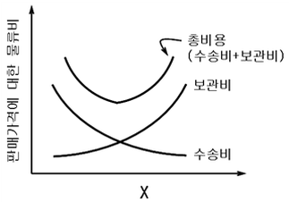
- 부패성
- 가치/중량
- 인화성
- 중량/용적
- 서비스 수준
(정답률: 알수없음)
14. 성공적 물류 아웃소싱을 위하여 필요한 사항에 해당되지 않는 것은?
- 세부적인 물류 목표 설정
- 지속적인 의사소통을 위해 표준화된 채널 이용
- 충분한 시간적 여유를 가지고 아웃소싱업체 선정
- 아웃소싱 물류업체에 대하여 적극적, 직접적으로 지휘, 통제
- 아웃소싱업체를 단순한 공급업체로만 인식하지 않고 파트너로 인정
(정답률: 75%)
15. A 기업의 수익률이 전체매출액 대비 20%이고 물류비가 전체매출액의 10%를 차지할 때, 물류비를 10% 절감한다면 수익률은 얼마나 증가하는가? (단, 다른 조건은 동일하다고 가정한다.)
- 1%
- 9%
- 10%
- 19%
- 20%
(정답률: 30%)
16. 다음은 대전에 위치한 K 기업 물류사업부의 물류비 계산을 위한 자료이다. 총운송비 1억원 중 A와 B의 운송비는 각각 얼마인가? (단, 운송비 배부기준은 거리× 중량을 사용한다.)
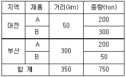
- A 운송비 : 4,000만원, B 운송비 : 6,000만원
- A 운송비 : 5,000만원, B 운송비 : 5,000만원
- A 운송비 : 6,000만원, B 운송비 : 4,000만원
- A 운송비 : 7,000만원, B 운송비 : 3,000만원
- A 운송비 : 8,000만원, B 운송비 : 2,000만원
(정답률: 80%)
17. 다음 중 라인-스탭형 물류조직에 대한 설명으로 옳지 않은 것은?
- 물류조직에 있어 라인은 스탭으로부터 조언을 받는 관계이다.
- 스탭은 물류전략 수립, 물류예산관리 및 채산성 분석 등을 수행한다.
- 라인 활동은 제품 또는 서비스의 생산과 판매 활동에 상당한 영향을 미친다.
- 라인은 분석, 조사 등을 통하여 생산 및 판매를 위한 2차적인 업무 활동을 한다.
- 직능형 물류조직의 단점을 보완하기 위하여 라인과 스탭의 기능을 세분화한 조직형태이다.
(정답률: 60%)
18. 물류비 산정의 목적 및 중요성에 대한 설명으로 옳지 않은 것은?
- 가격 책정에 필요한 물류비 자료를 제공한다.
- 물류의 기본계획 수립에 필요한 원가정보를 제공한다.
- 물류비관리는 경영관리자에게 필요한 원가자료를 제공한다.
- 물류예산의 편성과 통제를 위하여 필요한 원가자료를 제공한다.
- 소비자와 관련된 정보를 주관적으로 반영하여 적정가격의 책정을 위한 정보를 제공한다.
(정답률: 50%)
19. 다음 물류정보시스템에 대한 설명으로 옳지 않은 것은?
- EAN/UCC(European Article Number/Uniform Code Council) 시스템은 코드를 인쇄한 기업에 관계없이 어느 국가, 어느 장소에서도 사용가능하다.
- POS(Point Of Sale)는 생산시점관리 데이터와 다른 재고 관련 정보를 연계한 자동발주의 개념이다.
- CRP(Continuous Replenishment Program)는 주로 제조업체나 물류센터의 보충발주를 자동화하는 시스템이다.
- CAO(Computer Assisted Ordering)는 자동화된 주문관리에 의해 수요관리의 효율성을 도모하여 재고수준을 감소시킬 수 있다.
- VMI(Vendor Managed Inventory)는 생산자가 소매업자와 상호 협의하여 소매업자의 재고를 관리하는 개념이다.
(정답률: 50%)
20. ABC 재고관리방식에서 A 그룹의 품목비율과 금액비율로 합당한 조합은?
- 품목비율 : 15%, 금액비율 : 75%
- 품목비율 : 25%, 금액비율 : 25%
- 품목비율 : 50%, 금액비율 : 50%
- 품목비율 : 70%, 금액비율 : 15%
- 품목비율 : 75%, 금액비율 : 75%
(정답률: 77%)
21. 다음 중 국민경제적 관점에서 물류의 역할이 아닌 것은?
- 유통효율의 향상으로 물류비 절감
- 기업의 체질 개선과 물가 상승 억제
- 자재의 낭비를 방지하여 자원의 효율적인 이용에 기여
- 개별기업의 제품 및 원재료와 관련된 업무를 총괄 관리
- 상품의 품질 유지, 정시배송 실현으로 양질의 서비스 제공
(정답률: 46%)
22. 물류정보시스템의 구축 순서로 옳은 것은?
- 시스템의 목표설정 → 적용범위설정 → 구축조직 구성 → 업무현상분석 → 시스템 구축 및 평가
- 업무현상분석 → 시스템의 목표설정 → 적용범위설정 → 구축조직 구성 → 시스템 구축 및 평가
- 적용범위설정 → 시스템의 목표설정 → 구축조직 구성 → 업무현상분석 → 시스템 구축 및 평가
- 시스템의 목표설정 → 구축조직 구성 → 적용범위설정 → 업무현상분석 → 시스템 구축 및 평가
- 업무현상분석 → 적용범위설정 → 시스템의 목표설정 → 구축조직 구성→ 시스템 구축 및 평가
(정답률: 37%)
23. 유비쿼터스(Ubiquitous) 환경에 대한 설명으로 거리가 먼 것은?
- RFID Tag가 유비쿼터스를 실현하게 한다.
- 모든 전자기기에 컴퓨팅 기능이 가능하여야 한다.
- 라틴어로'언제 어디서나 있는'을 뜻하는 말이다.
- 제3자를 매개로 기업간 자료를 교환하는 통신망이다.
- 휴대전화를 통해 실시간으로 영상전화 통화까지도 가능하게 한다.
(정답률: 42%)
24. 물류정보시스템의 목표에 대한 설명으로 적절하지 않은 것은?
- 기업 간 정보의 공유를 바탕으로 유통재고를 최소화한다.
- 적정고객서비스를 최소한의 비용으로 달성할 수 있도록 지원한다.
- 조달, 생산, 유통 등을 포괄적으로 연결하여 전체적인 물자의 흐름을 관리한다.
- 환경변화에 신속히 대응할 수 있도록 기업의 경쟁력을 향상시키는데 기여한다.
- 정확한 생산계획 정보를 근거로 하여 공급계획을 수립하고 밀기(push)방식으로 유통망을 지원한다.
(정답률: 알수없음)
25. 기업 간 거래에서 고객의 주문 접수시 일반적으로 발생하는 업무와 가장 거리가 먼 것은?
- 고객의 신용상태 확인
- 주문 품목에 대한 재고 확인
- 제품인도를 위한 선적계획 확인
- 할인정책을 고려한 물품의 판매가격 결정
- 품목에 대한 명세, 수량 등과 같은 주문정보의 정확성 확인
(정답률: 알수없음)
26. 다음 중 ECR에 대한 설명으로 옳은 것은?
- 전자산업에서 최초로 실행되었다.
- Efficient Customer Relationship의 약자이다.
- 소비자단체와 유통업체간 상호 정보를 공유하여 비효율을 없애고자 한다.
- 매장의 판매정보가 온라인으로 공급자에게 전달되어 현재의 재고상태를 파악할 수 있도록 한다.
- 소비자의 가치를 극대화하기 위하여 최종소비자의 직접 참여를 바탕으로 하는 의사결정방식이다.
(정답률: 알수없음)
27. 다음 중 고객관계관리(CRM) 기법에 대한 설명으로 옳지 않은 것은?
- 고객의 Database 정보를 기업의 마케팅에 활용하는 기법이다.
- 기존고객의 관리보다는 주로 신규고객과 잠재고객의 창출에 초점을 맞추는 개념이다.
- 추가비용을 최소화하고 고객과의 상호작용 가치를 높여 이익을 증대시키는 개념이다.
- 수익성 높은 고객과의 관계를 창출ㆍ지원하여 매출을 최적화하고 고객기반을 확충하는 전략이다.
- 고객들의 성향과 욕구를 파악하여 이를 충족시키면서 기업의 목표를 달성하고자 하는 전략이다.
(정답률: 46%)
28. 다음 중 제품수명주기에 따른 고객서비스 전략에 관한 설명으로 옳지 않은 것은?
- 성장기에는 비용절감을 위해 물량을 통합한다.
- 쇠퇴기에는 물류에서의 위험을 최소화시키기 위한 전략이 필요하다.
- 높은 수준의 제품 가용성과 물류 유연성이 신제품의 도입기에 필요하다.
- 성장기에 들어서면 비용과 서비스간의 상호관계를 본격적으로 고려하기 시작하여야 한다.
- 성숙기에는 제품의 유통지역이 가장 광범위해지며, 많은 수의 재고거점이 필요하다.
(정답률: 알수없음)
29. 다음 중 파렛트의 표준화에 대한 설명으로 옳지 않은 것은?
- 운송장비의 적재효율 향상
- 환적 시 비용절감 효과, 상호교환 촉진
- 우리나라는 1100mm× 1000mm의 규격을 권장
- 하역시간 단축, 수송비용 절감, 재고조사의 편의성 증대
- 작업능률의 향상, 화물파손의 감소, 운임 및 부대비용의 감소
(정답률: 80%)
30. 물류표준화의 내용으로 적당하지 않은 것은?
- 파렛트와 수송용기와의 정합화
- 물류기기체계 인터페이스의 표준화
- 효율성을 고려한 운송수단의 단일화
- 단위화물체계의 보급을 위한 표준화
- 물류정보체계에 있어서 인터페이스의 표준화
(정답률: 54%)
31. 다음 중 물류표준화의 필요성에 대한 설명으로 옳지 않은 것은?
- 물류비의 과다부담을 덜게 하는 데는 물류표준화가 절대적으로 필요하다.
- 국제환경에 대응하기 위해서는 물류표준화가 국제표준과 연계되어야 한다.
- 개별기업에 의한 표준화규격 설정이 국가규격의 선도적인 역할을 하여야 한다.
- 수ㆍ배송, 보관, 하역, 포장 등의 기능 합리화를 위하여 물류의 표준화가 전제되어야 한다.
- 유통물량이 증가함에 따라 물류의 일관성과 경제성을 확보하기 위해 표준화를 하지 않을 수 없다.
(정답률: 알수없음)
32. 포장합리화의 원칙과 가장 거리가 먼 것은?
- 사양변경의 원칙
- 소량화ㆍ소형화의 원칙
- 집중화ㆍ집약화의 원칙
- 규격화ㆍ표준화의 원칙
- 시스템화ㆍ모듈화의 원칙
(정답률: 55%)
33. 다음 중 물류공동화의 효과가 아닌 것은?
- 운송비용의 감소
- 중복투자의 감소
- 유사부품의 공동관리
- 물류작업 생산성의 향상
- 타사 핵심기술 파악 용이
(정답률: 80%)
34. 물류합리화 기법으로서 6-시그마에 대한 설명으로 옳지 않은 것은?
- 모토로라에서 처음 시행하였다.
- 통계적 기법을 이용한 품질개선 운동이다.
- 모든 현상을 숫자로 표시하고 관리하는 것을 철학으로 한다.
- 최종생산품의 부적합 뿐만 아니라 생산과정의 부적합에도 주목한다.
- 평균에서 규격한계까지의 거리가 ± 3시그마가 되도록 품질수준을 통제하는 것을 목표로 한다.
(정답률: 19%)
35. 물류시스템 설계시 고려해야 할 요인으로 가장 거리가 먼 것은?
- 설비입지
- 재고정책
- 운송수단과 경로
- 신제품 개발 역량
- 대고객 서비스 수준
(정답률: 알수없음)
36. 다음 중 유통채널의 기능으로 적합하지 않은 것은?
- 물적 흐름(physical flow)
- 소유권의 흐름(title flow)
- 지급의 흐름(payment flow)
- 정보의 흐름(information flow)
- 조직의 흐름(organization flow)
(정답률: 67%)
37. 다음 중 유통채널의 수직적 통합에 대한 설명으로 옳지 않은 것은?
- 합병 또는 자본적 결합을 수반하는 경우를 자본통합이라고 한다.
- 수직적 통합은 적은 비용이 소요되며 유통조직 간의 유연성이 제고된다.
- 유통단계간의 여러 활동에 대한 사전 및 사후조절이 용이하다.
- 자본과 인적수단에 의해 하나의 기업이 두 개 이상의 생산, 유통단계를 통합하는 것이다.
- 거래처를 탐색, 교섭, 감시하는 비용이 줄어들고, 독자적 제품 조달처 및 판매처의 확보가 가능하다.
(정답률: 70%)
38. 다음에서 설명하고 있는 내용과 가장 관계가 깊은 것은?
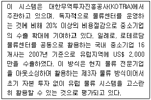
- 크로스 도킹
- 물류인증센터
- 공동수배송체제
- 해외공동물류센터
- 물류활동의 모듈화
(정답률: 알수없음)
39. 유예 또는 차별화 지연(Postponement) 기법에 대한 설명 중 옳지 않은 것으로만 나열된 것은?
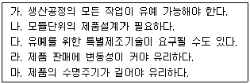
- 가, 나
- 나, 라
- 가, 마
- 다, 라
- 나, 마
(정답률: 알수없음)
40. 다음의 내용에 해당되는 경영기법은?
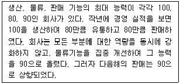
- 6-시그마
- 자재소요계획
- 제약이론
- JIT(Just In Time)
- 수송계획법
(정답률: 알수없음)
2과목: 화물수송론
41. 다음 중 TMS(Transportation Management System)의 주요 기능과 가장 거리가 먼 것은?
- 신속한 배송의뢰 주문처리 기능
- 일일 배송계획 기능
- 화물의 입ㆍ출고 빈도 ABC 분석 기능
- 차량 운행관리 기능
- GPS를 이용한 화물추적 기능
(정답률: 알수없음)
42. 화물운송에 대한 설명으로 옳지 않은 것은?
- 운송모드(Transportation Mode)에는 화물자동차, 철도, 항공기, 선박 등이 있다.
- 운송링크(Transportation Link)에는 복합물류터미널, 철도역, 항만, 공항, 컨테이너야드(CY) 등이 있다.
- 운송모드를 선택할 때는 화물특성, 운송거리, 운송시간, 운송비용 등을 고려한다.
- 항공운송은 소량 및 경량화물의 장거리 운송에 가장 적합하다.
- 철도운송은 안정성과 정시성 등의 장점이 있다.
(정답률: 50%)
43. 공동 수ㆍ배송시스템을 구축하고자 하는 기업들이 효과를 극대화하기 위하여 갖추어야 할 전제조건으로 가장 적절하지 않은 것은?
- 일정 지역내에 유사영업과 배송을 실시하는 기업이 존재하여야 한다.
- 공동 수ㆍ배송에 참여하는 기업간의 배송조건이 유사해야 한다.
- 공동 수ㆍ배송에 참여하는 기업간의 경제성 및 물류서비스 수준의 향상이라는 목적이 일치해야 한다.
- 공동 수ㆍ배송을 주관하는 책임기업이 존재해야 한다.
- 상품의 공동보관을 행하는 기업이어야만 공동 수ㆍ배송의 효과를 극대화할 수 있다.
(정답률: 알수없음)
44. 효율적인 수ㆍ배송시스템 운영을 위하여 고려해야 할 사항이 아닌 것은?
- 적재율 향상을 위한 적극적 직접배송 활용
- 수ㆍ배송에 필요한 적절한 차량 대수 산정
- 차량이 담당할 적절한 지역 범위 결정
- 공차 운행을 최소화할 수 있는 운행 경로 결정
- 방문지에서 원하는 시간대에 맞추는 적기배송(JIT) 방문 스케줄 결정
(정답률: 25%)
45. 화물자동차와 철도는 운송수단별 특성에 따라 경쟁우위를 확보할 수 있는 운송화물이나 거리를 고려할 수 있다. 다음 조건이 주어졌을 때, 자동차의 톤ㆍkm당 수송비는 얼마인가? [단, 채트반(Chatban) 공식을 이용]
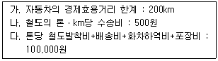
- 333원
- 1,000원
- 1,500원
- 2,000원
- 3,000원
(정답률: 55%)
46. 다음 컨테이너 화물과 관련된 서류를 선적절차에 따라 순서대로 옳게 나열한 것은?
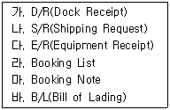
- 가 → 나 → 다 → 마 → 라 → 바
- 나 → 마 → 라 → 다 → 가 → 바
- 나 → 마 → 다 → 라 → 바 → 가
- 다 → 라 → 나 → 바 → 마 → 가
- 나 → 마 → 가 → 다 → 라 → 바
(정답률: 42%)
47. 다음은 LCL(Less-than Container Load) 화물의 수출 흐름에 대하여 설명한 것이다. 수출 흐름순서를 차례대로 옳게 나열한 것은?
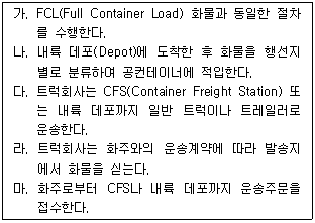
- 마 → 가 → 나 → 다 → 라
- 마 → 나 → 다 → 라 → 가
- 마 → 다 → 라 → 가 → 나
- 마 → 라 → 가 → 나 → 다
- 마 → 라 → 다 → 나 → 가
(정답률: 46%)
48. 항공화물운송과 관련된 운임에 대한 설명 중 옳지 않은 것은?
- 최저운임(Minimum Charge)은 일정기간 동안에 운송한 화물의 총 실중량에 적용요율을 곱한 결과, 일정액에 도달하지 않은 경우 적용되는 운임이다.
- 용적운임(Volume Charge)은 화물의 용적에 기초하여 산출한 운송요금으로 6,000cm3를 1kg으로 적용한다.
- 착불운임(Charges Collect)이란 항공운송장의 요금란에 수입업자로부터 운임이 수취되는 것을 의미한다.
- 종가운임(Valuation Charge)은 운송화물의 중량또는 용적이 아닌 가격에 따라 부과하는 운임이다.
- 중량운임(Weight Charge)은 화물중량에 근거하여 산출되는 요금이다.
(정답률: 알수없음)
49. 차량 운행계획 원칙과 관련된 설명으로 옳지 않은 것은?
- 운송물동량이 많은 경로는 적재용량이 큰 차량을 배차한다.
- 수요지에 따라 배송날짜가 다른 경우에는 요일별로 분리된 노선배정과 일정계획을 세운다.
- 집화(Pick-up)는 배송과정에서 하는 것이 효율적이다.
- 운행경로는 데포(Depot)에서 가장 가까운 지역부터 계획을 수립한다.
- 배송경로에서 제외된 수요지는 별도의 차량을 이용한다.
(정답률: 30%)
50. 항해 용선 계약에서 적재 및 하역비 부담조건에 대한 설명 중 옳지 않은 것은?
- FIO(Free In and Out)는 적하시와 양하시의 하역비를 선주가 부담하는 조건이다.
- Gross terms(Gross charter)는 항비, 하역비, 검수비를 선주가 부담하는 조건이다.
- Net terms(Net charter)는 항비, 하역비, 검수비를 화주가 부담하는 조건이다.
- FO(Free Out)는 적하시의 하역비는 선주가 부담하고 양하시의 하역비는 화주가 부담하는 조건이다.
- FI(Free In)는 적하시의 하역비는 화주가 부담하고 양하시의 하역비는 선주가 부담하는 조건이다.
(정답률: 60%)
51. 이 제도는 미국으로 수출되는 화물의 보안유지를 위하여 보다 엄격한 기준을 요구하고 공급망(SCM) 보안에 참여한 기업에 대한 인센티브 도입 등 기존의 화물 보안 프로그램을 강화하기 위하여 제안되었다. 컨테이너에 테러위험 화물이 적재되어 있는지 쉽게 파악하고, 송화인이 스스로 보안에 대해 책임지도록 하는 절차의 마련을 위해 20⑤년 11월 미국 상원에서 제안된 해상 물류 보안제도는 무엇인가?
- 컨테이너 안전협정(CSI)
- 위험물 컨테이너 점검제도(CIP)
- Greenlane 해상화물보안법(GMCSA)
- 국제선박 및 항만시설 보안규약(ISPS code)
- 항만보안법(SAFE Port Act)
(정답률: 알수없음)
52. 선박의 톤수에 대한 설명 중 옳지 않은 것은?
- 용적톤(Space Tonnage)에는 총톤수(Gross Tonnage : GT), 순톤수(Net Tonnage : NT), 재화용적톤수(Measurement Tonnage : MT), 배수톤수(Displacement Tonnage : DT)가 있다.
- 총톤수(GT)는 선박의 크기를 나타내며 관세, 등록세, 도선료 등의 산출기준이 된다.
- 순톤수(NT)는 상행위와 관련된 것으로 항세, 톤세, 항만시설사용료 등의 기준이 된다.
- 재화중량톤수(Dead Weight Tonnage : DWT)는 선박의 최대적재능력이며, Long Ton(LT)을 주로 사용한다.
- 화물톤(Cargo Ton)은 선하증권에 기재되는 톤수이며 운임 적용톤이다.
(정답률: 알수없음)
53. 항공화물 운송수단을 타 운송수단과 비교하였을 때 다음 설명 중 가장 부적합한 것은?
- 사고 발생빈도 면에서 안전성이 높다.
- 해상운송수단과 비해 화물의 파손ㆍ손실이 적다.
- 항공화물운송수단은 중량 및 부피, 길이 등에 대한 제한이 심하다.
- 육상 및 해상 운송수단과 복합일관수송체계를 구축할 수 있다.
- 운임은 타 운송수단에 비해 고가이며 수요의 운임 탄력성이 크다.
(정답률: 20%)
54. 복합운송의 특성으로 적합하지 않은 것은?
- 운송인은 전 운송구간에 걸쳐 화주에게 단일책임을 진다.
- 송화인은 여러 명의 대리인과 각 구간에서 별도의 운송계약을 체결한다.
- 운송인은 복합운송에 대한 복합운송증권을 발행한다.
- 전 운송구간에 단일운임을 적용한다.
- 두 가지 이상의 서로 다른 운송수단이나 방식에 의해 운송된다.
(정답률: 30%)
55. 다음 ( )안에 적합한 국제복합운송관련 용어를 순서대로 옳게 나타낸 것은?
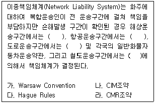
- 다, 라, 가, 나
- 나, 다, 가, 라
- 다, 가, 라, 나
- 가, 라, 나, 다
- 가, 다, 라, 나
(정답률: 50%)
56. 다음 중 국제물류주선업자(Freight Forwarder)의 주요 업무가 아닌 것은?
- 운송수단의 수배
- 선박의 운항스케줄에 따른 배선
- 운송 관련 서류의 작성
- 소량화물의 혼재 및 분배
- 본선과 화물의 인수 또는 인도
(정답률: 알수없음)
57. 운송합리화를 위한 체계로서 화물을 일정한 표준의 중량 또는 용적으로 단위화하여 기계적인 힘에 의하여 일관적으로 운송하는 물류시스템은 무엇인가?
- 창고자동화 시스템
- 적기배송 시스템
- 파렛트 풀 시스템
- 컨테이너 회수 시스템
- 유닛로드 시스템
(정답률: 64%)
58. 다음 중 화물자동차와 수상운송수단이 결합되는 복합운송 방식은?
- 피기백 방식(Piggy Back System)
- 피쉬백 방식(Fishy Back System)
- 버디백 방식(Birdy Back System)
- 랜드브리지 방식(Land Bridge System)
- 철도-해운 방식(Train-Shipping System)
(정답률: 알수없음)
59. 2001년 공정거래위원회가 승인한 “택배 표준약관”에 근거하여 볼 때, 다음 설명 중 택배사업자의 운송물 수탁에서 인도까지의 관련행위에 대한 설명으로 옳지 않은 것은?
- 고객이 운송장에 운송물의 가액을 기재하지 않으면 사업자는 손해배상한도액이 적용됨을 운송장에 명시할 수 있다.
- 운임의 청구에 대하여 고객과의 합의에 따라 운송물의 인도 시 수하인에게 수취할 수 있다.
- 사업자는 운송물의 포장이 운송에 적합하지 아니할 때에 적합한 포장을 하도록 청구하거나, 고객의 승낙을 얻어 고객의 부담으로 필요한 포장을 할 수 있다.
- 택배사업자는 다른 운송업자와 협정체결 등으로 공동으로 운송하거나 다른 사업자의 운송수단을 이용하여 수탁화물을 운송해서는 아니 된다.
- 운송물이 재생 불가능한 계약서, 설계도면과 같은 경우 수탁을 거절할 수 있다.
(정답률: 알수없음)
60. 다음은 항공화물의 수입절차이다. 절차를 순서대로 옳게 나열한 것은?
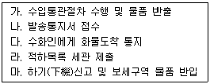
- 나 → 라 → 마 → 다 → 가
- 나 → 다 → 라 → 마 → 가
- 마 → 나 → 가 → 다 → 라
- 다 → 나 → 가 → 라 → 마
- 가 → 라 → 마 → 나 → 다
(정답률: 16%)
61. 파렛트 풀 시스템의 운영방식으로 화주가 개별적으로 파렛트를 보유하는 대신 특정회사의 파렛트를 공동으로 이용하는 것은?
- 교환 방식
- 리스ㆍ렌탈 방식
- 교환ㆍ리스병용 방식
- 대차결제 방식
- 리스ㆍ대차결제 방식
(정답률: 40%)
62. 다음 그림과 같이 각 구간별 운송시간이 주어졌을 때, 출발지에서 도착지까지의 최단 시간은 얼마인가?
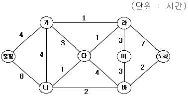
- 11 시간
- 12 시간
- 13 시간
- 14 시간
- 15 시간
(정답률: 30%)
63. 배송합리화를 위한 기법 중 차량이 지역 배송을 위해 배송센터를 출발하여 원 위치로 돌아오기까지 소요되는 거리 또는 시간을 최소화하기 위한 기법으로 휴리스틱 해법을 이용하는 것은?
- 고정 다이어그램 시스템(Fixed Diagram System)
- 루트 배송법(Route Dispatching Method)
- 외판원 문제(Traveling Salesman Problem)
- 스윕법(Sweep Method)
- 스템 드라이빙(Stem Driving)
(정답률: 알수없음)
64. 공동 수ㆍ배송의 장점이 아닌 것은?
- 화주의 운임 부담이 줄어든다.
- 소량 화물의 집배송이 용이하다.
- 물류 인원을 절감할 수 있다.
- 기업의 기밀 보안이 용이하다.
- 물류 공간 활용률이 높아진다.
(정답률: 64%)
65. 물류센터에 대한 설명으로 가장 적절하지 않은 것은?
- 다품종 대량의 물품을 공급받아 분류, 보관, 유통가공 등을 통해 적기배송을 위한 시설이다.
- 공급자와 수요자의 중간에 위치하여 수요와 공급을 통합하고 계획하여 효율화를 도모하는 시설이다.
- 재고집약을 통해 적정재고를 유지하고 상류와 물류기능을 분리하여 중복, 교차 수송을 실행한다.
- 수급조정은 재고집약을 통해 해결하고 수급변동의 영향을 흡수하고 완화한다.
- 유통과정의 단순화로 물류비용을 절감한다.
(정답률: 60%)
66. 물류터미널에 대한 설명으로 적절하지 않은 것은?
- 화물과 운송수단이 효율적으로 연계되도록 지원하는 물류인프라 역할을 수행한다.
- 물류터미널은 화물의 집화, 하역, 분류, 포장, 보관 등에 필요한 기능을 갖춘 시설물을 말한다.
- 복합물류터미널은 2가지 이상의 운송수단간의 연계수송을 할 수 있는 물류터미널을 말한다.
- 물류터미널은 운송중계 및 소매시장 등의 기능을 수행한다.
- 물류터미널에 설치되는 시설에는 화물취급장, 보관시설, 대형 주차장 이외에도 운전자용 휴게시설, 화물주선정보시스템 등이 있다.
(정답률: 55%)
67. 다음 중 유닛로드 시스템의 효과와 거리가 먼 것은?
- 표준화된 단위로 포장, 하역, 수송, 보관되어 물류작업의 표준화가 가능하다.
- 수송장비의 상ㆍ하차작업이 신속히 이루어져 하역작업의 대기시간이 단축된다.
- 물동량을 단위화 함으로써 자동화설비나 자동화장비의 이용이 가능하다.
- 파렛트화, 컨테이너화 등의 단위화로 인력이 절약된다.
- 물동량을 단위화된 크기로 작업이 가능하나 포장자재 비용의 절감이 어렵다.
(정답률: 30%)
68. 유해화학물질사고 국가비상대응정보시스템(NERIS: National Emergency Response Information System)의 수송안전정보시스템에 관한 설명 중 해당되지 않는 것은?
- 유해화학물질 수송에 따르는 상대적인 위험도 분석과 최적수송경로 분석기법을 포함한다.
- 도로의 위험도는 사고율, 유해화학물질 방출비율, 도로의 길이, 피해가능 규모의 곱으로 표현한다.
- 수송시 발생할 수 있는 만일의 사고에 대한 효율적 대응을 구축하는 조기경보시스템을 포함한다.
- NERIS의 최적수송경로는 일반적인 거리나 주행시간을 기반으로 제공한다.
- 조기경보시스템은 실시간 모니터링, 돌발상황관리, 관리자 운영 프로그램 등으로 이루어져 있다.
(정답률: 10%)
69. 복합물류터미널의 기능과 가장 거리가 먼 것은?
- 환적 기능
- 화물혼재 기능
- 시간조절 기능
- 부가가치창출 기능
- 품질조절 기능
(정답률: 30%)
70. 수ㆍ배송 경로를 결정하기 위해서 사용되는 분석 기법이 아닌 것은?
- 수송계획법
- 이동평균법
- 정수계획법
- Clarke-Wright 법
- Sweep 법
(정답률: 알수없음)
71. 다음 중 화물운송합리화 방안과 거리가 먼 것은?
- 피더선 전용부두 건설
- 화물전용차로제 도입
- OD(Off-Dock)CY의 증설
- 복합물류터미널 건설
- 화물주선시스템 도입
(정답률: 19%)
72. 화물운송체계에 대한 합리화 방안을 설명한 것으로 가장 적절하지 않은 것은?
- 도로 중심의 운송체계를 철도와 연안운송으로 운송수단 전환을 적극 추진해야 한다.
- 물류비 절감을 위해서 개별 화주별로 자가용 트럭을 이용하기 보다는 여러 화주가 공동으로 운송하여 적재율 향상과 공차율 감소를 도모해야 한다.
- 주간 차량운행을 활성화한다.
- 도로운송 기업간에 업무를 제휴하거나, 복합 운송체계를 도입한다.
- 정기직행열차를 도입하여 대량화물을 고속으로 운송한다.
(정답률: 67%)
73. 화물운송시스템을 설계하기 위하여 사전에 조사가 필요한 이유라고 할 수 없는 것은?
- 운송할 화물의 종류를 조사하여 적절한 운송수단을 준비한다.
- 운송물량을 조사하여 이용차량을 적절하게 선택한다.
- 운송빈도 및 운송 로트사이즈(Lot Size)를 조사하여 운송주기를 설정한다.
- 운송지역의 교통여건을 조사하여 적절한 운송계획을 수립한다.
- 발착지의 상ㆍ하차장 작업여건을 조사하여 운송요율을 결정한다.
(정답률: 알수없음)
74. 개인차주 K씨는 적재정량 12톤 차량을 1대 보유하여 운행하고 있다. 1주일 동안 운행한 실적을 조사했더니 다음과 같다. 평균적재율은 얼마인가?
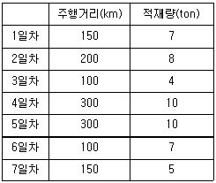
- 67.3%
- 67.5%
- 67.7%
- 67.9%
- 68.1%
(정답률: 10%)
75. 물류네트워크 설계와 관련된 내용으로 가장 적합하지 않은 것은?
- 공간적 측면과 시간적 측면을 서로 유기적으로 연결해서 설계해야 한다.
- 물류서비스와 물류비용 등을 함께 고려해서 설계해야 한다.
- 주요 의사결정 사항으로는 물류시설 입지, 수송, 재고 등이 있다.
- 물류네트워크는 가능한 복잡하고 자세하게 설계해야 한다.
- 자본비용, 주문처리비용, 운송비용 등의 물류비용을 최소화하는 것이 핵심이다.
(정답률: 47%)
76. 8개의 지점을 연결하는 파이프라인을 설치하고자 한다. 모든 지점간의 운송이 가능한 최소 거리의 파이프라인망을 설치하였을 때 총 거리는 얼마인가? [단, 마디(Node)는 지점을 의미하고, 가지(Link)는 지점간의 연결 가능한 구간을 나타내며, 가지 위의 숫자는 두 지점간의 거리를 의미한다.]
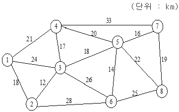
- 112km
- 114km
- 116km
- 117km
- 118km
(정답률: 28%)
77. 다음 설명에 해당하는 방식은?
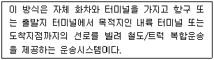
- Unit Train
- Freight Liner
- Block Train
- DST(Double Stack Train)
- TOFC(Trailer on Flat Car)
(정답률: 17%)
78. 2개의 공급지에서 2개의 수요지로 화물을 수송하려고 한다. 공급량은 공급지 1의 경우 400개, 공급지 2의 경우 600개이며, 요구량은 수요지 1의 경우 750개, 수요지 2의 경우 250개이다. 수송 방법은 공급지에서 수요지로 직송을 하는 방법과 중간 물류센터를 경유하여 배송하는 방법이 있다. 각 지점간의 단위 수송비(원/개)는 다음과 같다. 최적의 수송계획을 수립하였을 때 최소 총 수송비는 얼마인가?
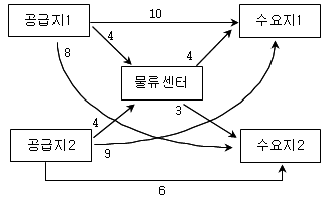
- 6,000원
- 6,500원
- 7,000원
- 7,500원
- 8,000원
(정답률: 19%)
79. 1980년대 초부터 항공수송네트워크의 대표적 수송망구축시스템으로 활용되는 Hub & Spoke System에 대한 설명으로 가장 적당하지 않은 것은?
- 항공화물 수송특성상 다수의 기종점쌍(Origin- Destination Pair)의 형태가 많이 나타나기 때문에 항공수송 네트워크 시스템으로 잘 이용된다.
- 전반적으로 터미널 작업인력이 감소된다.
- 운송범위가 넓지 않고 협소한 경우에 적용하는 것은 적합하지 않다.
- 노선의 수가 줄어들어 운송의 효율성이 높아진다
- 국제 소화물일관수송 서비스에 적용하는 것은 적합하지 않다.
(정답률: 알수없음)
80. 화물의 종류나 내용과는 관계없이 중량과 용적에 따라 동일하게 부과하는 해상 정기선 운임의 종류는 무엇인가?
- 종가운임(Ad Valorem Freight)
- 경쟁운임(Open Rate)
- 독자운임(Independent Action Rate)
- 무차별운임(Freight All Kinds Rate)
- 접속운임(Overland Common Point Rate)
(정답률: 24%)
3과목: 국제물류론
81. 다음 국제물류의 특성에 대한 설명 중 가장 적절하지 않은 것은?
- 국제물류는 국내물류보다 확대된 영역으로 물류활동이 국경을 초월하여 전개된다.
- 물류활동이 2개국 이상에서 전개되기 때문에 프로세스의 관리가 매우 중요하다.
- 재화나 용역의 국가 간 이동에 따른 통관 및 운송의 복잡성과 다양한 시장에 대한 정보 분석의 어려움이 존재한다.
- 국내물류 활동에 비해 환경적 제약이 줄어든다.
- 국제물류는 리드타임(Lead Time)의 증가로 인하여 재고량의 증가를 초래할 수 있다.
(정답률: 60%)
82. 국제기업의 국제물류시스템 선택에 있어서 고려해야 할 내용으로 가장 적절하지 않은 것은?
- 수출국 기업의 재무상태, 마케팅, 경영전략, 생산관리가 수입국의 환경요인보다 우선적으로 고려되어야 한다.
- 최종결정은 그 기업의 기대수입과 비용의 관계 및 총체적인 경영전략에 의하여 이루어져야 한다.
- 제품의 특성 및 수량, 수요의 성격, 주문 규모, 고객의 성향 등 경제적인 요인이 고려되어야 한다.
- 자회사의 재고부담비용 및 최종제품검사, 자회사간 수송사정 등 관리적인 요인이 고려되어야 한다.
- 환경적 요인으로는 시장에서 요구하는 고객 서비스의 수준, 수송경로의 특수사정, 수입국의 법령ㆍ규칙에 의한 제약, 내륙유통비용 등을 고려해야 한다.
(정답률: 37%)
83. A국의 2008년 수출예상금액이 400억 달러이고 수출에 따른 순이익은 수출액의 5%(20억 달러)가 발생한다고 가정하고, 전체 물류비가 수출금액의 15%(60억 달러)에 이른다고 할 때, 물류비를 10%(6억 달러) 절감하면 수출증대효과는 얼마인가? (단, 물류비 절감액은 순이익을 증가시키는 것과 같은 효과가 있으며, 정성적인 효과는 제외한다.)
- 80억 달러
- 100억 달러
- 120억 달러
- 140억 달러
- 160억 달러
(정답률: 30%)
84. 다음 ( ) 안에 들어갈 용어로 각각 옳게 나타낸 것은? (순서대로 가, 나)
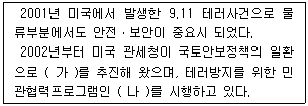
- AMS, NACCS
- CSI, NACCS
- AMS, CSI
- CSI, C-TPAT
- NACCS, C-TPAT
(정답률: 알수없음)
85. 정기선과 부정기선의 특징을 비교한 것 중 옳지 않은 것은?
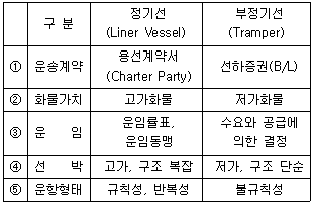
- ①
- ②
- ③
- ④
- ⑤
(정답률: 알수없음)
86. 국제복합운송의 주요 경로에 대한 설명 중 옳지 않은 것은?
- SLB(Siberian Land Bridge)는 극동에서 유럽까지의 복합운송구간 중 시베리아 횡단철도를 이용하는 운송경로이다.
- TCR(Trans China Railroad)은 중국 연운항에서 러시아를 통과하여 유럽까지 연결할 수 있는 운송경로이다.
- MLB(Mini Land Bridge)는 극동에서 미국 서안까지 해상운송을 한 후 철도ㆍ도로 운송을 통하여 미국 동안 또는 걸프지역까지 내륙운송하는 경로이다.
- OCP(Overland Common Point)는 극동에서 미주대륙으로 운송되는 화물에 공통운임이 부과되는 지역으로서 로키산맥 동쪽지역을 말한다.
- MCB(Micro Land Bridge)는 극동에서 미국을 통하여 남미로 연결되는 복합운송구간이다.
(정답률: 40%)
87. 국제소화물일관운송(국제택배)의 특징에 대한 설명 중 가장 적절한 것은?
- 국제소화물일관운송업의 주요 취급화물은 소화물과 상업서류이다.
- 대부분의 화물은 고가귀중품의 상품이며, 일정 기간 내에 신속한 인도를 목적으로 하는 운송 서비스이다.
- 화물금액에 무관하게 간이수입신고를 하면 된다.
- 운임의 적용구간은 출발지 공항과 도착지 공항의 거리를 기준으로 한다.
- 운임은 IATA와 각국 정부에 의하여 결정된다.
(정답률: 알수없음)
88. 다음에서 설명하고 있는 컨테이너화물의 운송형태는?
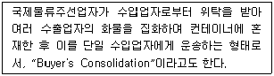
- CY-CY(FCL-FCL)
- CFS-CFS(LCL-LCL)
- CFS-CY(LCL-FCL)
- CY-CFS(FCL-LCL)
- CY-ICD(LCL-FCL)
(정답률: 50%)
89. 다음에서 설명하고 있는 국제복합운송의 책임체계로 옳은 것은?
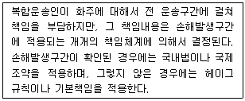
- Uniform Liability System
- Network Liability System
- Tie-up System
- Flexible Liability System
- Liability for Negligence
(정답률: 24%)
90. 다음 중 국제소화물일관운송(국제택배)시 발행되는 운송서류는?
- Bill of Lading
- Air Waybill
- Sea Waybill
- Courier Receipt
- Consignment Note
(정답률: 알수없음)
91. 다음 중 선사 또는 대리점이 선적완료 후 작성하는 적재화물 명세서는?
- Booking List
- Dock Receipt
- Tally Sheet
- Mate's Receipt
- Manifest
(정답률: 알수없음)
92. 다음은 운송과 관련된 국제조약이다. 조약과 관련된 운송수단으로 바르게 연결된 것은? (순서대로 가, 나, 다)
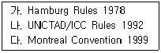
- 해상운송, 복합운송, 항공운송
- 해상운송, 복합운송, 도로운송
- 도로운송, 항공운송, 해상운송
- 도로운송, 해상운송, 항공운송
- 항공운송, 해상운송, 복합운송
(정답률: 알수없음)
93. FOB 조건에 의한 수입시, 수입상이 선사에 B/L 원본을 제출하고 운임을 지불하면 수입상이 보세구역에서 수입화물을 찾을 수 있도록 선사가 수입상에게 발행하는 서류는?
- M/R
- S/R
- L/C
- D/O
- L/I
(정답률: 34%)
94. 다음 중 운임, 운송조건, 기타 항공운송 업무와 관련된 주요 사항을 결정하는 국제민간항공협의단체는?
- IATA
- FIATA
- ICAO
- FAI
- IMO
(정답률: 알수없음)
95. 다음 중 운송화물이 선박에 적재되었음을 증명하며, 적재된 화물을 목적지에서 수화인에게 인도(delivery)할 것을 약정하여 선박회사가 발행하는 유가증권으로 옳은 것은?
- 해상화물운송장(Sea Waybill)
- 선하증권(Bill of Lading)
- 신용장(Letter of Credit)
- 수입화물선취보증장(Letter of Guarantee)
- 상업송장(Commercial Invoice)
(정답률: 30%)
96. 다음은 선하증권에 관한 국제조약(Hague Rules, 1924)의 내용이다. ( ) 안에 들어갈 용어로 가장 알맞은 것은?
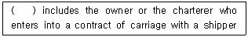
- Shipper
- Carrier
- Receiver
- Consigner
- Consignee
(정답률: 30%)
97. 다음 컨테이너 터미널의 구성요소들 중 선박에서 가장 가까운 순서대로 나열한 것은?
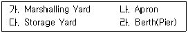
- 가 → 나 → 다 → 라
- 나 → 라 → 다 → 가
- 나 → 라 → 가 → 다
- 라 → 나 → 다 → 가
- 라 → 나 → 가 → 다
(정답률: 알수없음)
98. 용선계약에서 약정된 정박기간을 초과하여 선적하거나 양륙한 시간에 대해 용선자가 선주에게 지급하기로 약정한 금액을 의미하는 것으로서 옳은 것은?
- N/R(Notice of Readiness)
- 할증료(Surcharge)
- 체선료(Demurrage)
- 조출료(Despatch Money)
- WWD(Weather Working Days)
(정답률: 34%)
99. 인천국제공항의 배후지에 자유무역지역이 설치되어 있다. 자유무역지역에 대한 다음 설명 중 옳지 않은 것은?
- 외국에서 자유무역지역으로 물품의 반입 시 관세가 면제된다.
- 자유무역지역에 반입된 물품은 재수출이 가능하다.
- 자유무역지역에는 하역, 보관, 운송 등 물류시설만 입주할 수 있다.
- 자유무역지역에 있는 외국물품이 국내로 반출되면 관세 등이 부과된다.
- 인천국제공항 외에도 부산항, 광양항, 인천항 등의 특정 배후지역이 자유무역지역으로 지정되어 있다.
(정답률: 46%)
100. 국내 상법상 선하증권의 기재사항 중 법정기재 사항이 아닌 것은?
- 수통의 선하증권을 발행한 때에는 그 수
- 선박의 명칭ㆍ국적 및 톤수
- 송하인의 성명ㆍ상호
- 운임
- 면책조항
(정답률: 알수없음)
101. 다음 중 UNCTAD/ICC 복합운송증권규칙에 대한 내용으로 옳지 않은 것은?
- 본 규칙은 단일운송 또는 복합운송의 여부와 무관하게 운송계약에 적용할 수 있다.
- 운송인의 반증책임을 전제로 한 과실책임원칙과 함께 변형통합책임체계를 채택하였다.
- 운송인은 사용인의 항해과실 및 본선 관리상의 과실, 고의 또는 과실에 의한 화재가 아닌 경우 면책이지만 감항성 결여는 예외 없이 귀책사유이다.
- 화물 인도 후 9개월 내에 소송이 제기되지 않으면 운송인은 모든 책임을 면한다.
- 운송인의 예상 가능한 손해에 대한 작위 및 부작위에 대해서는 책임제한의 혜택이 박탈된다.
(정답률: 0%)
102. 해상화물운송장(Sea Waybill : SWB)에 대한 설명 중 옳지 않은 것은?
- 해상운송에서 화물 인도의 신속화, 서류분실에 따른 위험의 회피 및 사무의 합리화를 목적으로 선하증권의 대체로서 사용되는 운송서류이다.
- 계약상품의 인도 또는 적재를 입증하는 비유가증권 서류이다.
- 송화인에게 발행하는 서류이지만, 선하증권과 달리 운송품 인도청구권을 상징하지 않기 때문에 양도성이 없다.
- 해상화물운송장에 관한 국제규칙은 "CMI Uniform Rules for Sea Waybill 1990"이다.
- 권리증권이므로 항해 중에 증권을 이전함으로써, 물품의 전매나 담보가 가능하다.
(정답률: 37%)
103. 다음은 신용장통일규칙(UCP 600)에 대한 내용이다. ( ) 안에 들어갈 용어로 가장 알맞은 것은?
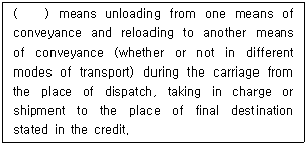
- Bill of Lading
- Multi-modal
- Transportation
- Transhipment
- Stevedoring
(정답률: 알수없음)
104. 다음 무역대금 결제방식 중 송금결제 방식에 해당되는 것으로만 나열된 것은?
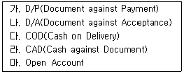
- 가, 나, 다
- 가, 나, 라
- 나, 다, 라
- 나, 다, 마
- 다, 라, 마
(정답률: 알수없음)
1⑤. 다음 ( ) 안에 들어갈 서류를 옳게 나열한 것은? (순서대로 가, 나)
- L/I(Letter of Indemnity), Clean B/L
- T/R(Trust Receipt), Shipped B/L
- L/I(Letter of Indemnity), T/R(Trust Receipt)
- L/G(Letter of Guarantee), Received B/L
- L/G(Letter of Guarantee), Clean B/L
(정답률: 46%)
106. 다음 Incoterms 2000 무역거래조건 중 매도인이 수입통관 절차를 밟아야 하는 것은?
- DEQ
- CIP
- EXW
- DDP
- FOB
(정답률: 50%)
107. FOB 조건으로 한 수입가격이 1,000만 달러, 부산항까지 해상운임이 200만 달러, 부산에서 서울까지 육상운임이 100만 달러, 해상적하보험료가 50만 달러, 수입관세율이 8%, 부가가치세가 10%인 경우 관세와 부가가치세는 각각 얼마인가?
- 관세 80만 달러, 부가가치세 8만 달러
- 관세 80만 달러, 부가가치세 100만 달러
- 관세 100만 달러, 부가가치세 10만 달러
- 관세 100만 달러, 부가가치세 135만 달러
- 관세 108만 달러, 부가가치세 130만 달러
(정답률: 알수없음)
108. Incoterms 2000 중 위험 분기점(Transfer of Risks)이 본선의 난간(Ship's Rail)인 무역거래조건에 해당하는 것은?
- FOB
- EXW
- CIP
- FAS
- DES
(정답률: 알수없음)
109. 다음 설명에 해당되는 Incoterms 2000의 무역거래조건은?
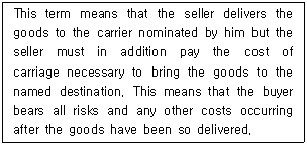
- CIF
- FOB
- CPT
- DDP
- DES
(정답률: 8%)
110. 현재 국내 주요 항만에서 운영되고 있는 해운항만 종합정보시스템으로서 화물 및 선박의 입출항과 관련된 것은?
- CVO
- PORT-MIS
- KROIS
- ITS
- KL-NET
(정답률: 알수없음)
111. 다음 해상운임에 대한 설명 중 옳지 않은 것은?
- Ad Valorem Freight는 고가화물이나 운임부담력이 있는 화물에 적용하는 운임이다.
- Freight Collect는 무역조건이 FOB인 경우 수입업자가 화물의 수출지에서 지불하는 운임이다.
- Box Rate는 컨테이너 한 개당으로 정한 운임률을 말한다.
- Commodity Rate는 화물을 품목별로 분류하여 차등 적용하는 운임률이다.
- Back Freight는 원래의 목적지가 아닌 변경된 목적지로 운송해야 할 때 지불하는 추가운임이다.
(정답률: 알수없음)
112. 항공기 파렛트 1개를 이용하여 2,500kg의 LCD 부품을 수출하려고 하는 C업체의 경우, 다음 조건을 고려할 때 항공기부가운임인 파렛트 - 벌크운임(Bulk Unitization Charge : BUC)은 얼마인가?
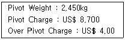
- US$ 8,700
- US$ 8,800
- US$ 8,900
- US$ 9,000
- US$ 9,200
(정답률: 37%)
113. A상사는 휴대폰의 핵심부품을 항공편으로 일본에 수출할 예정이다. 다음의 조건을 고려할 때 항공운임은 얼마인가?
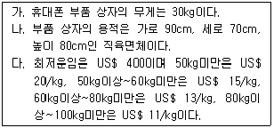
- US$ 400
- US$ 600
- US$ 842
- US$ 895
- US$ 924
(정답률: 40%)
114. 우리나라의 수출상사 D사가 부산항(BUSAN)에서 중국의 청도항(QINGDAO)까지 해상운임과 보험료를 부담하기로 하는 국제물품매매계약을 체결했을 경우 무역거래조건으로 가장 적합한 표시방법은?
- CIF BUSAN
- CIF QINGDAO
- CIP BUSAN
- CIP QINGDAO
- CPT QINGDAO
(정답률: 알수없음)
115. 대금결제조건으로 신용장을 사용할 때 국제물류의 Outbound Flow가 옳은 것은?
- 수출계약 → 신용장 수령 → 수출통관 → 선적 → 대금결제
- 신용장 수령→ 수출계약 → 수출통관 → 선적 → 대금결제
- 수출계약 → 선적 → 수출통관 → 신용장 수령 → 대금결제
- 수출계약 → 신용장 수령 → 대금결제 → 수출통관 → 선적
- 신용장 수령 → 수출계약 → 선적 → 수출통관 → 대금결제
(정답률: 30%)
116. 다음 해상보험에 관한 설명 중 옳지 않은 것은?
- Total Loss Only란 보험목적물이 전부 멸실 또는 손실되었을 경우에 한해서 담보책임을 지는 조건이다.
- Abandonment와 관련된 손해는 Constructive Total Loss이다.
- 공동해손의 정산기준은 국제규칙인 York-Antwerp Rules이다.
- 신협회적하약관상 가장 제한적인 담보조건은 ICC(A) 조건이다.
- 보험목적물이 실질적으로 멸실되었거나, 성질의 상실로 인한 가치가 완전히 상실되었을 경우 Actual Total Loss로 간주한다.
(정답률: 알수없음)
117. 다음 중 소송과 비교하여 중재제도의 장점으로 옳지 않은 것은?
- 단심제
- 저렴한 비용
- 절차의 비공개
- 법원의 확정판결과 동일한 효력
- 상대방과 합의 없이 제소 가능
(정답률: 알수없음)
118. 다음 해상보험 조건의 신협회적하약관 ICC(B)에 열거된 담보위험 중 ICC(C)약관에서 제외되는 위험에 해당되지 않은 것은?
- 갑판유실
- 투하
- 추락손
- 지진
- 해수, 호수, 하천수의 유입
(정답률: 알수없음)
119. 다음 국제물류관련 용어에 대한 설명으로 옳은 것은?
- CAF : 유류할증료
- CQD : 관습적 조속하역조건
- TCR : 시베리아 횡단철도
- TEU : 40피트 컨테이너 단위
- ETD : 선박입항 예정시간
(정답률: 알수없음)
120. 다음 중 1998년 미국 개정해운법의 주요 내용이 아닌 것은?
- 해운동맹의 독점금지법 적용 면제
- 서비스계약 시 개별선사의 비밀계약 허용
- 선사의 독자행동권 확대
- NVOCC의 자격요건 완화
- 화주의 교섭력 강화
(정답률: 알수없음)